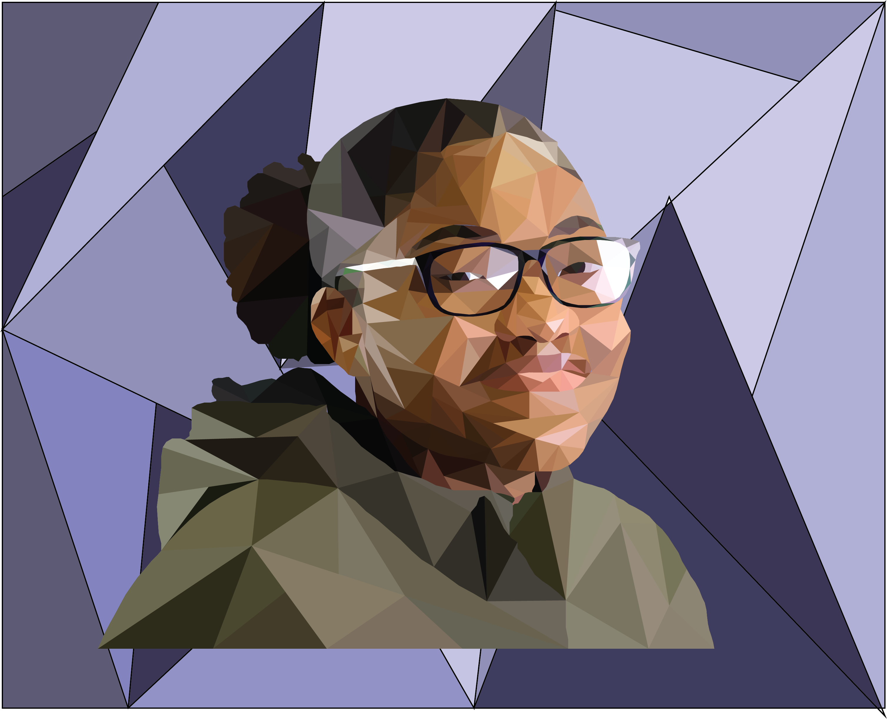
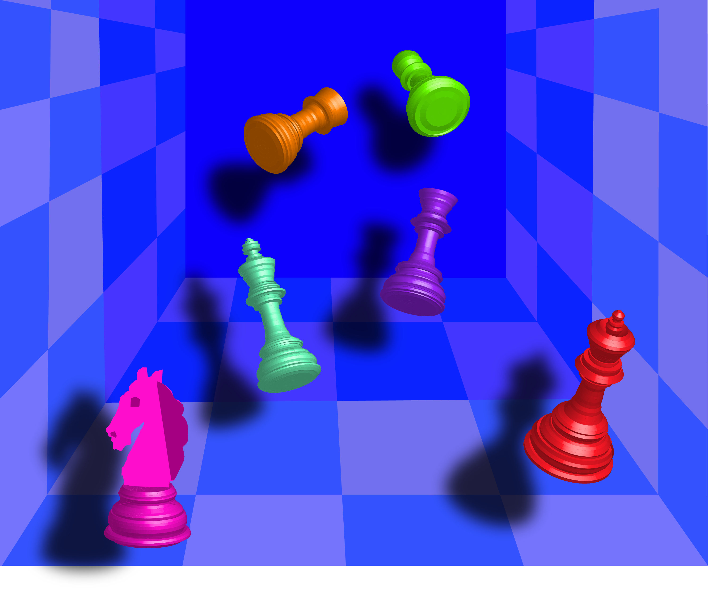

self portrait
medium: adobe illustrator
date: 2019
this self-portrait is, entirely made up of triangles, this was achieved by carefully outlining
triangles of different size and using the live paint tool to fill each one. the colors of the portrait choosen were
from the orginal photo however i choose a purple background because it was complimentary to the green coat.

chessboard
medium: adobe illustrator
date: 2018
the objective of this project was to create a 3D realistic chessboard using Illustrator.
i made the chess pieces by outlining half of the pieces, then using the 3D render tool to add some dimensionality.
the hardest part was making the horse chess piece because unlike the others which were symmetrical,
the horse had to be made by rendering the bottom and outlining the top half.
.jpg)
cityscape
medium: adobe illustrator
date: 2020
the objective of this project was to create a 3D realistic chessboard using Illustrator.
I made the chess pieces by outlining half of the pieces, then using the 3D render tool to add some dimensionality.
make the effect seen in the work. The hardest part of the work was making the horse chess piece because unlike the others
which were symmetrical, the horse had to be made by rendering the bottom and outlining the top half.